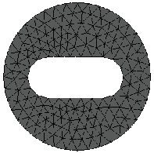
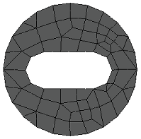
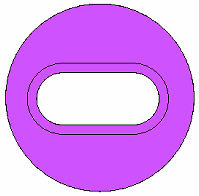
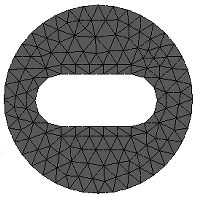
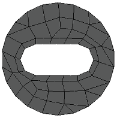
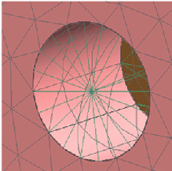
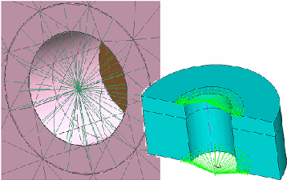

Offsetting edges around holes, openings, and fasteners
Before meshing a model that contains openings, holes, or fasteners such as bolted connections, you can use the Surfacing tab→Surfacing group→Split list→Offset Edge command in the part and sheet metal models to produce better meshing results.
For openings created by cutouts, the Offset Edge command can produce a better mesh around an edge or over an area by dividing the face or surface. As shown in the following table, the default mesh around the cutout improves as you split faces by offsetting the edges around the cutout.
|
Offset edges? |
Opening in face or surface |
Default mesh (tetrahedral) |
Default mesh (surface) |
|
No |
 |
 |
|
|
Yes |
 |
 |
 |
For bolted connections, the Offset Edge command generates offset faces to represent where each bolt, nut, and washer come in contact with a hole. This produces more nodes for the spider mesh to connect to and a better representation of the bolt.
|
Bolt without offset edge imprint |
Bolt with offset edge imprint |
|
 |
 |
How do I
Override mesh propertiesLearn more
Assembly best practices for simulationUsing a simplified model
Specifying material properties accurately
Removing geometry flaws and small entities
Optimizing study results
Simulation materials and properties
Mesh material properties